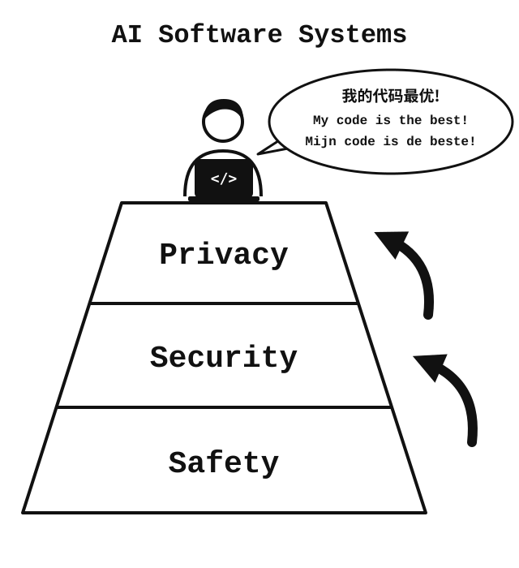
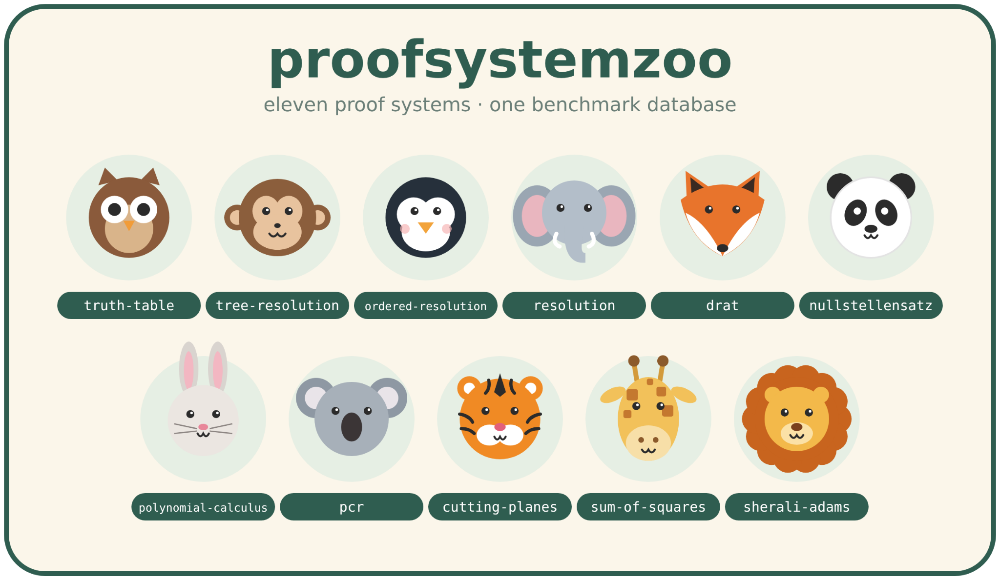

I am interested in designing reliable and trustworthy methods to enhance safety, security, and privacy in software and AI systems. I am also interested in their theoretical limitations. For example, by Rice's theorem, checking nontrivial functional properties in a program is undecidable. Which formal tool or mathematical method is the best to use given a problem? When should other complimentary methods such as testing or machine learning be used?
💡I am looking for a new job opportunity.
Contact:
- ✉️ Email: zunchenhuang at gmail dot com
- LinkedIn | Github | dblp | Google Scholar

Tools
A list of tools which are mostly for fun. Click on the github project link for more details.
SAT-Glow: a visualization tool for SAT solving in OpenGL. This tool shows whole solving prodecure in 3D graph with many features.

proofsystemzoo: a tool comprised a zoo of (propositional) proof systems in Ocaml. This tool compares instances in different proof systems over one local SQLite db.
Reflection
I wish AI could solve P vs NP, and explain why, Sep 28, 2026
A reflection on LLM for coding, May 24, 2026